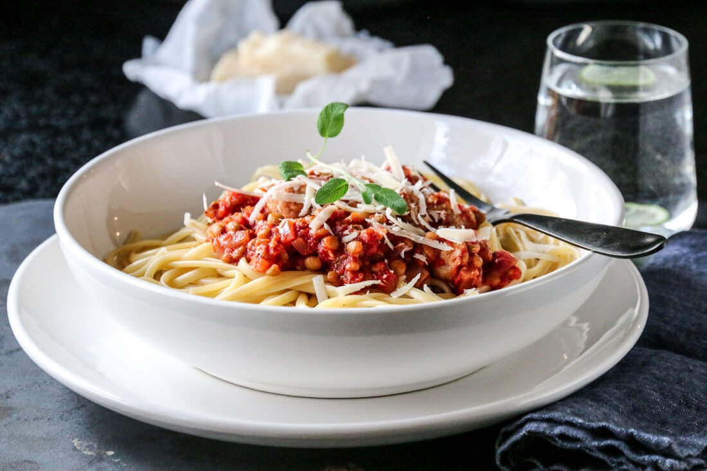

Spaghetti with salsiccia and tomatoes

Description
A tasty and quick pasta dish with salsiccia, tomatoes, chili, and red lentils.
Salsiccia is an Italian raw, spicy sausage. If you don't have salsiccia,
you can use minced meat of choice instead.
Ingredients
- 300g of salsiccia or minced pork meat
- 1 diced red onion
- 3 cloves of garlic, finely chopped
- 1/2 red chili, finely chopped
- 1tbsp tomato puree
- 400g canned tomatoes, chopped
- 1tsp white wine vinegar
- 1tsp provence spice
- 1/2 teaspoon sugar, salt, and pepper
- 300g red lentils
- parmesan
Steps
- Use a little neutral oil in a pan and fry the onion on medium heat until shiny and soft.
Add garlic and chili towards the end of the cooking time.
- Add the tomato puree and simmer for a few minutes while stirring,
then add the tomatoes, chicken stock, Provencal spices (or fresh herbs,
if you have any) and white wine vinegar. Let it simmer / simmer for approx.
15 minutes.
- Cook the pasta al dente according to the instructions on the package.
I have used spaghetti here, but you can of course use another type if you
want. Take care of approx. 1 dl of the pasta water.
- Remove the skin from the sausage and crumble it in the pan into evenly
sized pieces, and simmer for 5 minutes under a lid. If you use minced meat
instead, season it with salt, pepper and possibly a little Provencal
spice, before pulling the meatballs in the tomato sauce.
- Feel free to use canned lentils. Rinse the lentils until they stop
frothing and add to the pan, and simmer for another 5 minutes, until the
meatballs are cooked through. If necessary, add a little of the pasta water
if a lot of liquid has evaporated along the way. Season with salt, pepper,
sugar and possibly a little more Provencal spices.
- Mix pasta and sauce together, or serve it separately.
Enjoy immediately with a little grated parmesan, fresh herbs and good
bread.
Enjoy!